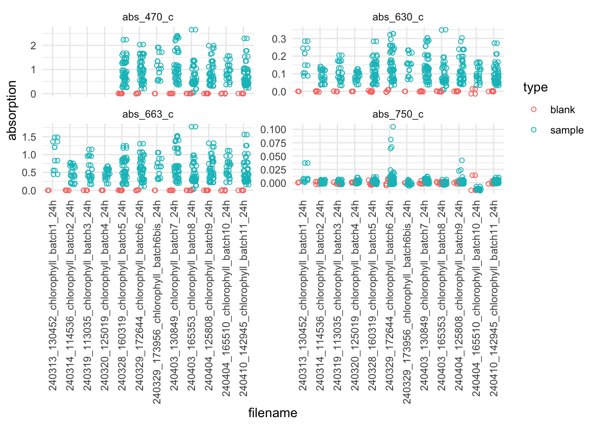

devtools::install_github("andieich/coralchlo")Calculate chlorophyll a concentration and Symbiodiniaceae counts
If the metadata sheet is filled out correctly, R functions, stored in a package called coralchlo, can be used to calculate the chlorophyll a concentration with the absorption measured with the photometer. The coral fragment area is calculated with the change in weight before and after adding the second layer of paraffin wax and used to normalize the chlorophyll a concentration and Symbiodiniaceae counts per area.
The package can be installed with the devtools package:
The current version is 0.0.0.3.
After installation, you can load the package and download the metadata sheet. During this the import of the sheet, some basic test are done to ensure it was filled out correctly and that the values make sense.
Additionally, the surface area is estimated from the increase in weight with the additional layer of paraffin wax. Different conversion factors can be used. Either a value from the literature from Veal et al. (2010), or conversion factors based on custom-made calibration blocks (see here for more info). The method can be selected in the read_metadata() function with method = "veal" or method = "criobe". The default selection is "criobe".
library(coralchlo)
link_metadatasheet <- "example_link"
dat_overview <- read_metadata(link_metadatasheet)Then, the chlorophyll a concentration is calculated based on the absorption measured with the photometer.
The photometer files (.csv) can be store in Google Drive or locally. If they are stored locally, path_to_biotekfolder, is the path to the folder containing these files. If they are stored in Google Drive, path_to_biotekfolder is the path within the Google Drive to the folder containing the photometer files. If you use Google Drive, set is_googledrive = TRUE. The files are downloaded to a temporary folder or to a folder specified in download_directory. All files in download_directory will be replaced.
The values are blank-corrected. To ensure that the blank values make sense, they are plotted for all wavelengths and photometer files. This can be skipped by setting plot = FALSE in the normalise_chl_per_area() function. The area data is used to normalize the chlorophyll concentration for the surface area of the coral fragment. For each sample, two measurements were taken, therefore two chlorophyll a and c2 concentrations will be exported.
dat_chl <- normalise_chl_per_area(dat_overview,
path_to_biotekfolder = "example_path")
head(dat_chl, n = 10)| sample_id | measurement_replicate | chl_a_per_cm2 | chl_c2_per_cm2 | chl_tot_per_cm2 |
|---|---|---|---|---|
| 2TSML27P | m1 | 2.514030 | 0.3057623 | 2.819792 |
| 2TSML27P | m2 | 2.514030 | 0.3057623 | 2.819792 |
| 2TSPL07P | m1 | 2.013116 | 0.2365427 | 2.249658 |
| 2TSPL07P | m2 | 2.017770 | 0.2350646 | 2.252834 |
| 2TSAL09P | m1 | 3.948941 | 0.4135201 | 4.362461 |
| 2TSAL09P | m2 | 3.948941 | 0.4135201 | 4.362461 |
| 2TSML26P | m1 | 4.847892 | 0.4351625 | 5.283054 |
| 2TSML26P | m2 | 4.847892 | 0.4351625 | 5.283054 |
| 2TSAL07P | m1 | 4.706739 | 0.4407329 | 5.147472 |
| 2TSAL07P | m2 | 4.706417 | 0.4543703 | 5.160787 |
Similarly, the Symbiodiniaceae counts are normalized for the surface area of the coral fragment. Since six measurements are taken per sample, six values are exported
dat_counts <- normalise_counts_per_area(dat_overview)
head(dat_counts, n = 10)| sample_id | count_replicate | count_per_cm2 |
|---|---|---|
| 2TSML27P | c1 | 3623635 |
| 2TSML27P | c2 | 3355218 |
| 2TSML27P | c3 | 4026261 |
| 2TSML27P | c4 | 3221009 |
| 2TSML27P | c5 | 4160470 |
| 2TSML27P | c6 | 3489426 |
| 2TSPL07P | c1 | 3868471 |
| 2TSPL07P | c2 | 4479282 |
| 2TSPL07P | c3 | 3766669 |
| 2TSPL07P | c4 | 3155858 |
References
Veal, C. J., Holmes, G., Nunez, M., Hoegh-Guldberg, O., & Osborn, J. (2010). A comparative study of methods for surface area and three-dimensional shape measurement of coral skeletons. Limnology and Oceanography: Methods, 8(5), 241–253. https://doi.org/10.4319/lom.2010.8.241